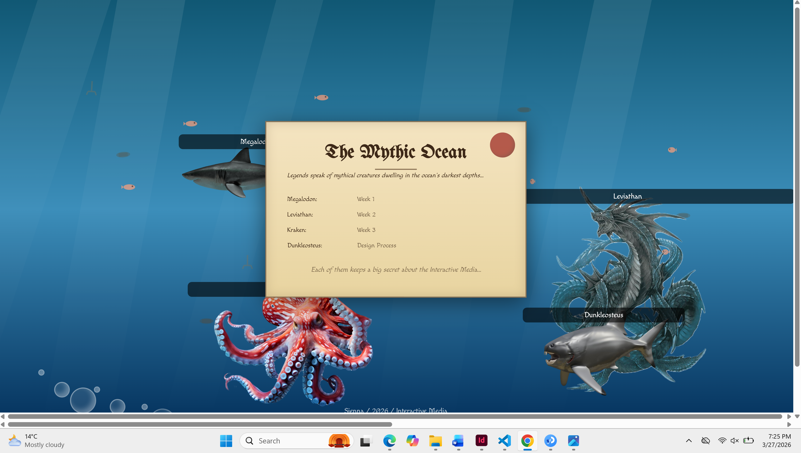
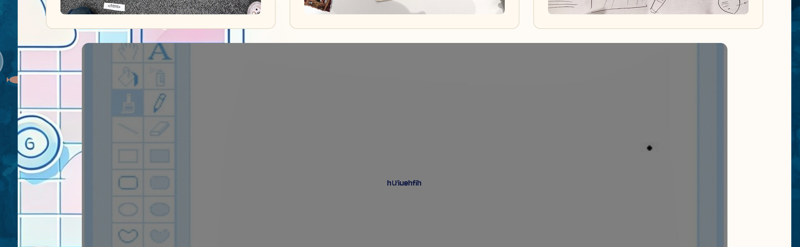
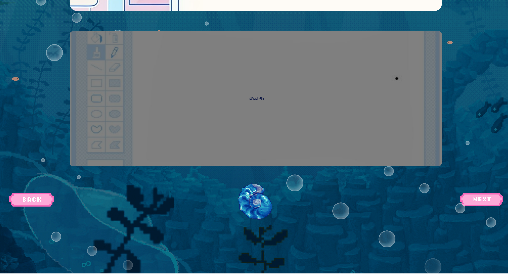

Process
It started with a sketch. My original concept was an ocean with four sea monsters: Megalodon, Kraken, and others. Each representing a section of the workbook.The ocean metaphor came from wanting the workbook to feel like exploration or game rather than documentation. You have to find it, catch it, to access the content. The gamification is I wanted someone to spend time in the site, not just scroll through it (and bcuz I love games). Finding the right PNGs, adding backgrounds, getting everything to sit correctly on screen: that was already more work than I expected. The fish were a particular challenge. Because they're flat images and not 3D models, flipping their direction mid-swim looked completely unnatural. And adjusting keyframes took forever! At various points the fish were teleporting, disappearing at full speed, zigzagging like they were panicking, or stretching like taffy. Understanding keyframes properly was a turning point. Each percentage (0%, 25%, 50%…) is a position in time, left controls horizontal position, top controls vertical. If a fish starts at left: 110% it begins off the right edge of the screen. If it ends at left: -200px it disappears off the left edge. The values in between create the path. Getting fish to loop smoothly meant making sure the start and end positions were off-screen on opposite sides, otherwise the fish would snap/teleport back to its starting point every loop. Honestly, I kind of enjoyed fixing it. There was something satisfying about watching them gradually swim properly. Time ran out before I could sort the fonts properly, check all the links, or fix the images. Then when I uploaded to GitHub it refused to load and I spent another chunk of time debugging that, pretty close to the deadline, pretty panicked. After tutor feedback, I rebuilt it. I found pixel fish GIFs and fell in love with them immediately - they changed the whole direction of the site. I was also really inspired by nekoweb.org around this time. The biggest ongoing frustration: fixing one small bug and watching the entire site vanish. Wrong stacking, overlapping settings, layouts that made no sense. It's gotten better. I've gotten better. The second version got a lot more time and care: I wanted background music, a long scrollable page, a horizontal gallery. I managed some of it. The rest might still happen if I have the time.




References & Resources
Fish GIFs — pinterest (free assets)
Ocean GIF background —pinterest
Lake Lamode soundtrack from Super Mario Odyssey. I wanted background music that felt like an underwater adventure, and this was the first one I found that fit the vibe. It’s a bit long, but I think it works well as a loop.
p5.js — p5js.org
drawing canvas, github Karen Ann & Andy
vertical gallery and “treasure” gallery, github Karen Ann & Andy
Arduino code — adapted from class workshops, Karen Ann & Andy
Typewriter effect — adapted from github, Karen Ann & Andy
speech bubbles, fish animations — developed with ChatGPT, edited and customised by Sienna
Teleportacia — art.teleportacia.org
Nekoweb — nekoweb.org (design inspiration)
Jersey 10 font — Google Fonts